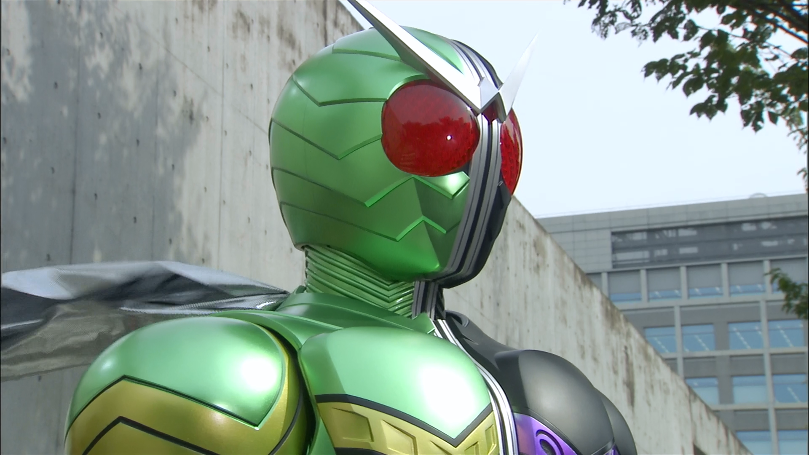

About Kamen Rider W
In order to maintain the peace of Windy City, the private detective ‧ Hidari Shotaro and
his knowledgeable companion ‧ Philip together transformed into Kamen Rider W, and fought against the monster named Dopant that appeared one after another.
Kamen Rider W's Characteristics

this is Kamen Rider W
Who transformed into Kamen Rider W?
- 左翔太郎（Hidari Shōtarō） is the left half of Kamen RiderW
- Philip (フィリップ Firippu) is the right half of Kamen Rider W